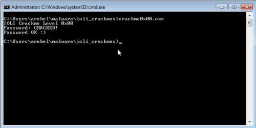

I am re-familiarizing myself with reverse engineering again by going through some simple crackme challenges. This one is called the IOLI Crackmes by pof. The goal is to find the correct password and also to patch it so that it can accept any input and still show that it's correct.
Getting the password
Running the program shows a password prompt.

Of course, randomly entering passwords is going to be a waste of time so I opened up IDA to look at its code.
I knew that whatever password I enter in the program would be checked against the actual password. This is the part of the program that I should focus on so I scanned the code and found this:

mov [esp+38h+Str2], offset Str2; "250382"
mov [esp+38h+Format], eax;
call _strcmp
And just from these few lines alone I already knew what the password is. IDA Pro was helpful enough to add a comment that offset Str2 equates to 250382. Surely enough, this number was the password.

Patching the executable
The next part of the challenge is to patch the executable so that it can accept any input and would still allow us through.
Looking at the graph view, we want the program to always go to the node on the right which has the "Password OK" message.

The line that we could change to allow us to do this would be this one:
jz short loc_40138A
The jz can be changed to a jmp command by changing the op code. Opening up the "Patch Bytes" window while the line is highlighted would show us this:

74 0E C7 04 24 2E 40 40 00 E8 A8 19 00 00 EB 0C
The opcode related to jz short loc_40138A is the first two btyes 74 0E. 74 is the "Jump short if equal" opcode and 0E is the relative jump distance. Changing 74 to EB converts it to the "Jump" opcode effectively making the line jmp short loc_40138A.

After saving, IDA will automatically upgrade the graph. It will now show us that the flow of the program now jumps to the right node directly.

All that is left to do is to patch the executable via "Edit > Patch Program > Apply patches to input file..." and run the program. From here, any entered password would automatically get accepted.

On to the next challenge...
This is the first out of the 10 challenges from this set. Since this is the first one, it is only natural for it to be very easy. It's still a good refresher for me especially since the last time I did any reversing was from a few years ago. I look forward to the next challenges, I do hope that they would ramp up in difficulty and also teach me new things for me to improve.